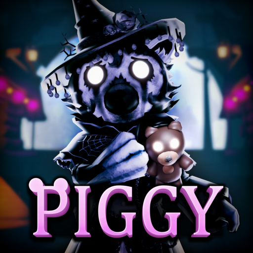

🐷 Piggy: Fright Night Part II vine pe 17 octombrie

Fright Night Season 9 rulează din 1 oct, 20:00 până pe 1 nov, 20:00 RO. Part II, cu recompensele finale, începe pe 17 oct la 20:00 („haunts are just beginning”). Harta Forest are look de Halloween și un secret care deblochează un efect de Survivor, între 10 oct și 8 nov.
Update 21 oct: Piggy e în The Hollow, iar Chapter 13 are loc acolo (eventul oficial Roblox, 23 oct – 2 nov) — detalii aici: https://pyromanc3r777.github.io/vexu-hq/posts/the-hollow-eventul-de-halloween-al-roblox-vine-pe-22-octombrie.html
🔄 UPDATE 22 oct (CONFIRMAT): Frightful Carnival, de sâmbătă 24 oct, 20:00, până duminică 8 nov, 19:00 (ora României) — detalii în caseta CONFIRMAT de mai jos.
🔄 UPDATE 23 oct (✅ verificat pe pagina oficială Roblox): Frightful Carnival rămâne programat de sâmbătă, 24 oct, 20:00, până duminică, 8 nov, 19:00 (ora României, după schimbarea orei). Harta Carnival primește look de Halloween, iar printre atracțiile înfricoșătoare e ascuns un secret care dă un Kill Effect unic, pe timp limitat.
⚠️ UPDATE 23 oct (ZVON, Piggy News): update-ul Piggy pentru The Hollow ar veni pe 31 oct, fără oră anunțată. Tot Piggy News spune că Frightful Carnival nu e legat de The Hollow. Neconfirmat pe un canal oficial: https://x.com/Piggy_News/status/2113594729334202750